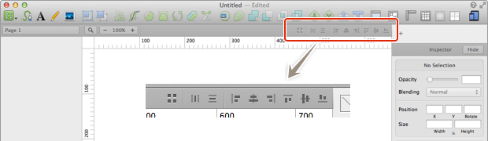
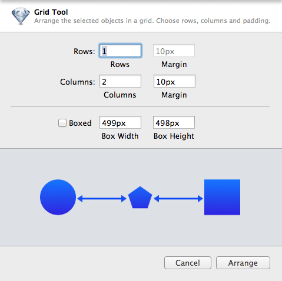
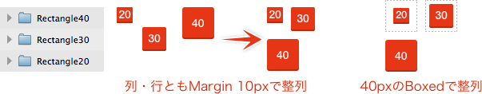

Sketch.app Advent Calender 2013 19日目の記事です。今回は整列についてお届けします。
Sketchの基本。というSketch（Sketch 3）の基本操作にフォーカスした電子書籍をリリースしました。詳しくはこちらの「Sketchの基本。」のページをご覧ください。
この記事はSketch 2を元にした記事です。最新版の動作とは異なる可能性が高いため、参考程度にご覧ください。
整列について
もう解説するまでもないですが、オブジェクトを指定の方向で揃える機能です。ツールバーの下にあるマークが整列ツールです。

左から、
グリッド整列
［Arrange］の中にある「Make Grid…」です。
水平方向に均等配置
［Arrange］→［Distribute Objects］の中にある「Horizontally」です。ショートカットはCommand＋Control＋Hです。
垂直方向に均等配置
［Arrange］→［Distribute Objects］の中にある「Vertically」です。ショートカットはCommand＋Control＋Vです。
左揃え
［Arrange］→［Align Objects］の中にある「Left」です。
左右中央揃え
［Arrange］→［Align Objects］の中にある「Horizontally」です。
右揃え
［Arrange］→［Align Objects］の中にある「Right」です。
上揃え
［Arrange］→［Align Objects］の中にある「Top」です。
上下中央揃え
［Arrange］→［Align Objects］の中にある「Vertically」です。
下揃え
［Arrange］→［Align Objects］の中にある「Bottom」です。
グリッド整列
名前そのままですが、異なる大きさのオブジェクトでも指定したグリッドに沿った整列ができます。

これを実行するとダイヤログが出るので、数値を入力します。「Rows」が縦の個数、「Columns」が横の個数で、それぞれの「Margin」がオブジェクトの間隔です。「Boxed」にチェックを入れた場合、入力された値のボックスを基準にグリッド整列します。

グリッドに並ぶ順番ですが、選択範囲でレイヤーリストの下から上へZ字に整列されます。
「Columns」の数を選択しているオブジェクト以上に設定した上で「Margin」を0にすると、オブジェクトのサイズが異なっていても隙間なく横一列に並びます。当然「Rows」も同じように設定すれば、縦一列に並びます。
偶数ピクセルのオブジェクトに奇数ピクセルの「Boxed」を組み合わせると、いわゆるピクセルのずれが起こるので注意してください（もちろん逆でも起こります）。